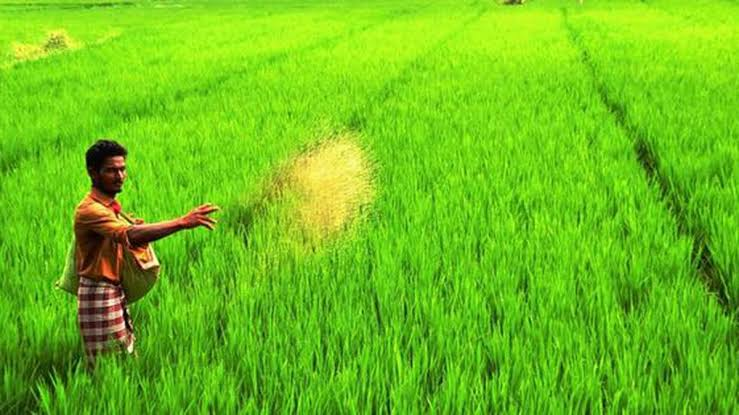
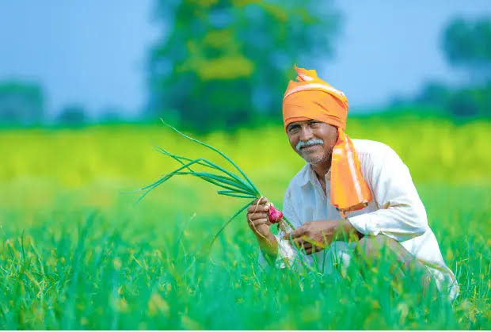

Our Farmers
India's National Policy for Farmers 2007 defines farmer as:
For the purpose of this Policy, the term FARMER will refer to a person actively engaged in the economic and/or livelihood activity of growing crops and producing other primary agricultural commodities and will include all agricultural operational holders, cultivators, agricultural labourers, sharecroppers, tenants, poultry and livestock rearers, fishers, beekeepers, gardeners, pastoralists, non-corporate planters and planting labourers, as well as persons engaged in various farmingrelated occupations such as sericulture, vermiculture, and agro-forestry. The term will also include tribal families / persons engaged in shifting cultivation and in the collection, use and sale of timber and non-timber forest produce.
As per the 2014 FAO world agriculture statistics India is the world's largest producer of many fresh fruits like banana, mango, guava, papaya, lemon and vegetables like chickpea, okra and milk, major spices like chili pepper, ginger, fibrous

crops such as jute, staples such as millets and castor oil seed. India is the second largest producer of wheat and rice, the world's major food staples.
India is currently the world's second largest producer of several dry fruits, agriculture-based textile raw materials, roots and tuber crops, pulses, farmed fish, eggs, coconut, sugarcane and numerous vegetables. India is ranked under the world's five largest producers of over 80% of agricultural produce items, including many cash crops such as coffee and cotton, in 2010. India is one of the world's five largest producers of livestock and poultry meat, with one of the fastest growth rates, as of 2011.
Development
As per the 2014 FAO world agriculture statistics India is the world's largest producer of many fresh fruits like banana, mango, guava, papaya, lemon and vegetables like chickpea, okra and milk, major spices like chili pepper, ginger, fibrous crops such as jute, staples such as millets and castor oil seed. India is the second largest producer

of wheat and rice, the world's major food staples.
India is currently the world's second largest producer of several dry fruits, agriculture-based textile raw materials, roots and tuber crops, pulses, farmed fish, eggs, coconut, sugarcane and numerous vegetables. India is ranked under the world's five largest producers of over 80% of agricultural produce items, including many cash crops such as coffee and cotton, in 2010. India is one of the world's five largest producers of livestock and poultry meat, with one of the fastest growth rates, as of 2011[update].
One report from 2008 claimed that India's population is growing faster than its ability to produce rice and wheat.While other recent studies claim that India can easily feed its growing population, plus produce wheat and rice for global exports, if it can reduce food staple spoilage/wastage, improve its infrastructure and raise its farm productivity like those achieved by other developing countries such as Brazil and China.
India exported $39 billion worth of agricultural products in 2013, making it the seventh largest agricultural exporter worldwide, and the sixth largest net exporter. This represents explosive growth, as in 2004 net exports were about $5 billion. India is the fastest growing exporter of agricultural products over a 10-year period, its $39 billion of net export is more than double the combined exports of the European Union (EU-28). It has become one of the world's largest supplier of rice, cotton, sugar and wheat. India exported around 2 million metric tonnes of wheat and 2.1 million metric tonnes of rice in 2011 to Africa, Nepal, Bangladesh and other regions around the world.
India has shown a steady average nationwide annual increase in the mass-produced per hectare for some agricultural items, over the last 60 years. These gains have come mainly from India's green revolution, improving road and power generation infrastructure, knowledge of gains and reforms.Despite these recent accomplishments, agriculture has the potential for major productivity and total output gains, because crop yields in India are still just 30% to 60% of the best sustainable crop yields achievable in the farms of developed and other developing countries. Additionally, post harvest losses due to poor infrastructure and unorganised retail, caused India to experience some of the highest food losses in the world.